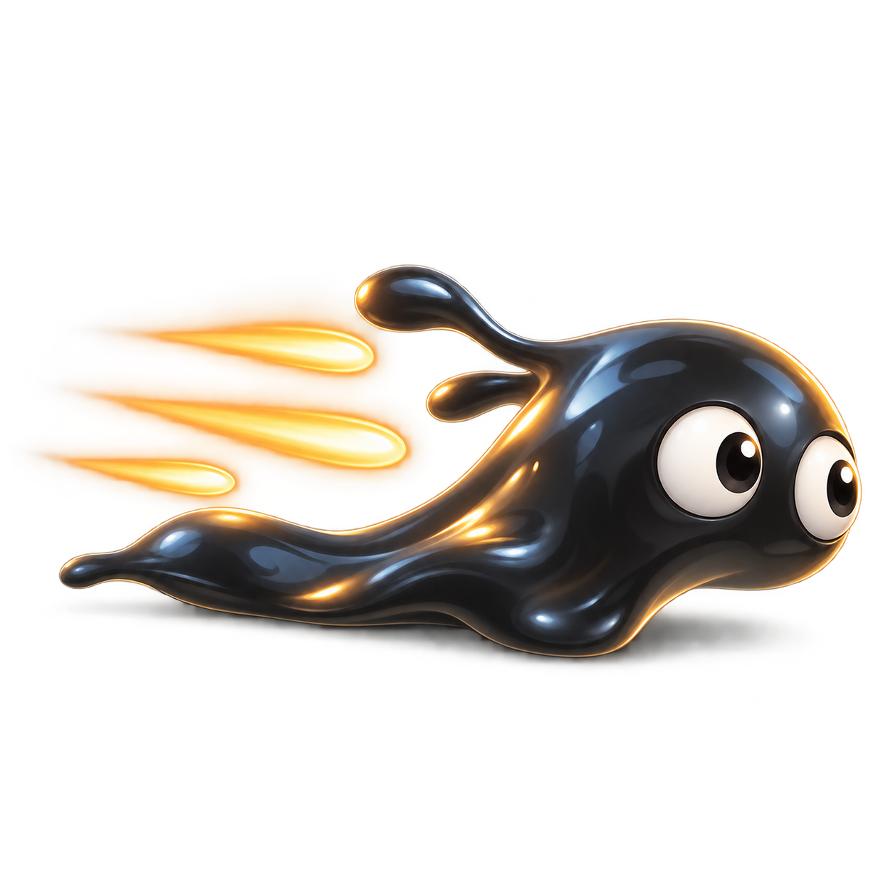
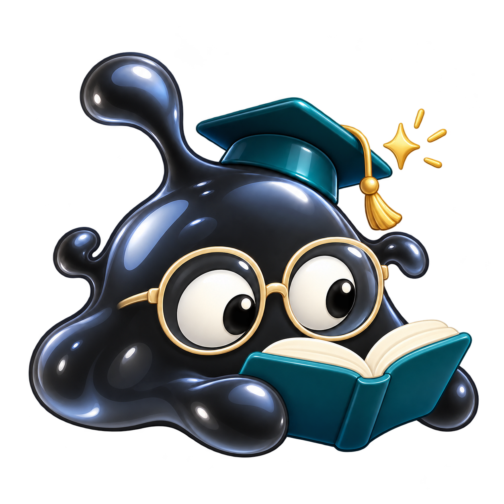
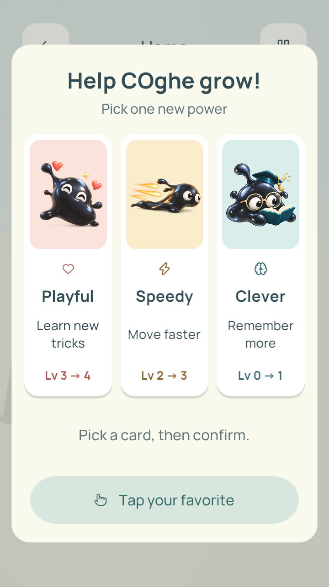

COghe / UI design / 17.10.2026Ba thẻ. Ba cách lớn lên.
Ba thẻ xếp cùng một hàng ngang, cùng kích thước và không chọn sẵn thẻ nào. Chạm để xem giải thích bên dưới, rồi xác nhận lựa chọn. Giữ chất liệu sinh vật đen bóng, nền ngà và màu dịu của phòng thí nghiệm. Thẻ Trí tuệ là giáo sư COghe theo yêu cầu: kính tròn, mũ học giả và cuốn sách nhỏ.

SpeedyBò và leo nhanh hơn

CleverNhớ thêm bước tiếp theo

Ảnh chụp trực tiếp bản MacKiểm tra trong game
Nguyên tắc đã áp dụng- Ba thẻ ngang, cùng kích thước và khoảng cách; không làm nổi bật thẻ giữa.
- Chạm cả thẻ; chọn lại thoải mái trước khi xác nhận. Thẻ không phóng to hoặc dịch chuyển khi chọn.
- Dấu tích và viền xác định thẻ đang chọn, không phụ thuộc vào màu.
- Hình không chứa chữ, tên tiếng Anh ngắn; không dùng mặt quái vật nhe răng.
- Clever giải thích rõ: đợi 5 giây → COghe tìm cơ quan → người chơi bấm để thao tác.
- Giữ nguyên sức mạnh, tiến trình và dữ liệu đã lưu.
Kiểm chứng chi tiết trong verification.json. Bố cục tỉ lệ iPad được chụp bằng bản Mac, không phải ảnh chụp trên iPad. Chưa thử với trẻ để đo khả năng hiểu và chưa đo FPS trên thiết bị. Tranh là sprite UI có alpha, nhập tối đa 512 px; không thêm mô hình 3D hay ánh sáng. Tài liệu · Prompt gốc · Prompt giáo sư